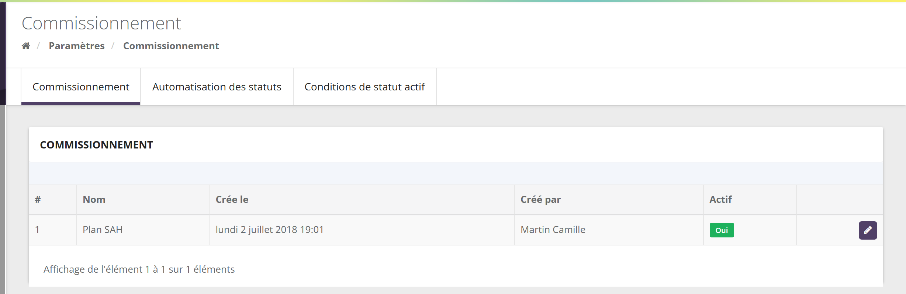
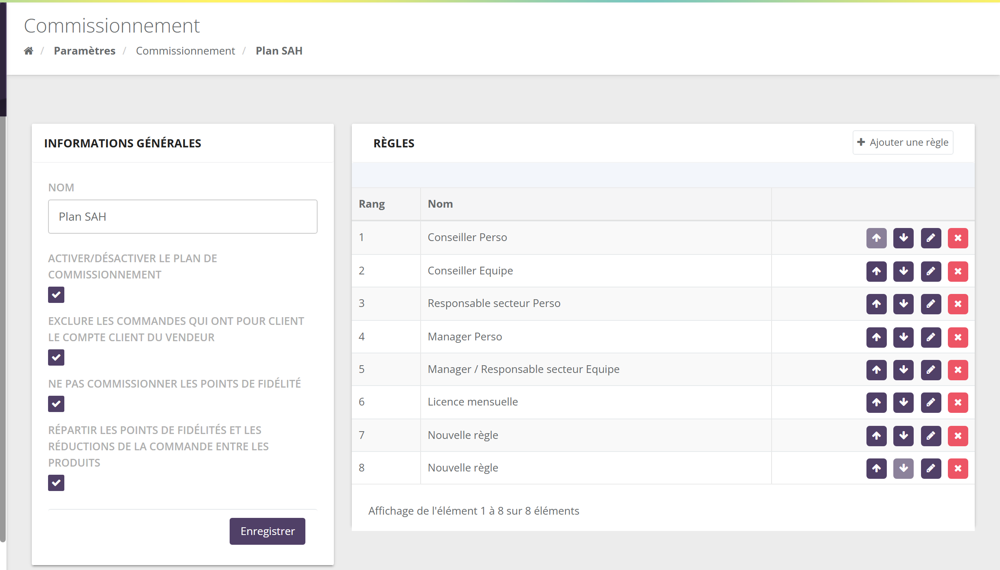
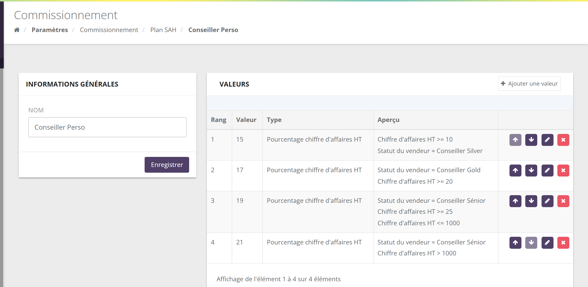
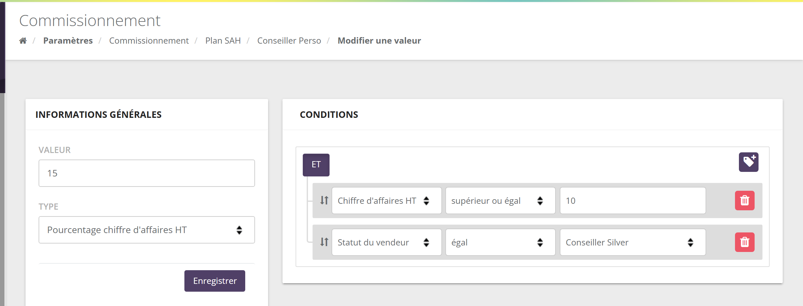

À quoi sert le plan de rémunération ?
Le plan de rémunération (dans l'espace marque : le plan de commissionnement) traduit votre plan marketing en règles de calcul. Chaque nuit, SellingAtHome l'applique pour estimer les commissions du mois en cours ; le 1er du mois, il l'applique une dernière fois pour clôturer le mois écoulé.
Votre plan dit : « une conseillère touche 18 % de son chiffre d'affaires HT à partir de 500 €, 22 % à partir de 1 500 €, et 5 % du chiffre d'affaires de son équipe directe si elle a elle-même vendu au moins 500 € ». Dans SellingAtHome, cela fait deux règles : « Commission personnelle » (avec ses paliers) et « Commission équipe N-1 » (avec sa condition d'activité).
Le résultat se lit ensuite dans l'onglet Commissions de l'écran Vendeurs, sur le bulletin de chaque conseillère, et dans son espace conseillère. Le versement et la clôture sont détaillés dans Clôture et versement des commissions.
L'espace marque dit vendeur pour la conseillère, animateur pour l'animatrice et recruteur (ou parrain) pour la recruteuse. Les écrans parlent aussi de règle et de valeur : une règle donne une ligne du bulletin, une valeur est l'un de ses paliers.
Où le trouver

- Le menu n'apparaît que si le module de commissionnement est activé pour votre marque par SellingAtHome.
- L'onglet Commissionnement liste votre plan. Le bouton Ajouter un plan n'apparaît que tant qu'aucun plan n'existe : une marque a un seul plan.
- Les onglets Automatisation des statuts et Conditions de statut actif servent à calculer les statuts et l'activité des conseillères : ils sont présentés dans l'univers Réseau et rémunération (page sur les statuts).
Plan, règles, valeurs, conditions
3.1 Les quatre niveaux
Le tout
Un nom, quatre options de calcul, et une liste ordonnée de règles.
Une ligne du bulletin
« Commission personnelle », « Prime de recrutement »… Son nom devient le libellé de la ligne sur le bulletin.
Un palier
Un type de calcul (ce que l'on rémunère), un nombre (taux en % ou montant en €) et des conditions.
Un critère
« Chiffre d'affaires HT ≥ 500 », « Statut du vendeur = Manager »… Toutes les conditions d'une valeur doivent être vraies (ET).
3.2 Comment le moteur lit le plan
Pour chaque conseillère et pour chaque mois :
- Les règles sont parcourues dans l'ordre de leur rang.
- Dans une règle, les valeurs sont testées dans l'ordre de leur rang. La première valeur dont toutes les conditions sont vraies est appliquée, et elle seule. Si aucune ne l'est, la règle ne produit rien pour cette conseillère.
- La valeur retenue produit une ligne « base × taux » (ou un montant fixe pour une prime). Le montant est arrondi au centime.
- S'ajoutent ensuite, le cas échéant, les primes de challenges, les lignes ajoutées à la main et, selon votre réglage, la retenue de cotisations sociales.
Un palier n'est pas une tranche. Si Léa atteint le palier « 22 % dès 1 500 € » avec 1 800 €, elle touche 22 % sur les 1 800 €, et non 18 % jusqu'à 1 500 € puis 22 % au-delà. Pour un bonus sur la seule partie qui dépasse un seuil, utilisez le calcul « avec bonus sur dépassement de seuil » (voir les types de calcul).
Rangez les paliers du plus exigeant au moins exigeant : « ≥ 3 000 » en rang 1, « ≥ 1 500 » en rang 2, etc. Sinon le palier le plus bas, vrai aussi pour les grosses vendeuses, serait toujours retenu le premier. Vous pouvez aussi borner chaque palier des deux côtés (« ≥ 500 » ET « < 1 500 »).
3.3 Lignées et équipe
Les calculs d'équipe s'appuient sur l'organigramme :
| Notion | Qui est concerné ? |
|---|---|
| N-1 (lignée 1) | Les conseillères dont elle est l'animatrice. |
| N-2 … N-6 | Les conseillères animées par ses N-1, puis par leurs N-2, etc. Le plan va jusqu'à 6 niveaux. |
| Équipe | Toute sa descendance dans l'organigramme, à la date de fin du mois. Les calculs existent « vendeur inclus » (son propre CA compte) ou non. |
| Recrues | Les conseillères dont elle est la recruteuse : utilisé par les calculs et conditions « par recruteur » et « nouvelles recrues ». |
Sophie anime Léa. Léa anime Chloé et Manon, qui animent chacune deux conseillères. Pour Léa, Chloé et Manon sont ses N-1 ; les quatre autres sont ses N-2. Pour Sophie, Léa est une N-1 et Chloé une N-2.
Le chiffre d'affaires commissionnable
Presque tous les calculs partent du CA commissionnable : le chiffre d'affaires des commandes attribuées à la conseillère, net de ce qui ne doit pas être rémunéré.
4.1 Ce qui compte, ce qui ne compte pas
- Les commandes de la conseillère payées dans le mois, quel que soit leur type (réunion, vente directe, web, mini-boutique…).
- Le prix des produits, après les remises de la ligne et de la commande.
- Les frais de livraison : seuls les produits comptent.
- Les réductions de la commande, y compris les bons d'achat, et le porte-monnaie utilisé.
- Les avoirs créés dans le mois (commandes annulées en tout ou partie).
- Les produits marqués Produit non commissionné, les produits payés en points de fidélité, et le kit de démarrage (sauf réglage contraire).
- Les commandes de frais de participation aux réunions.
- Cadeaux : une commande cadeau compte pour le prix de ses produits, c'est-à-dire en pratique 0 €.
- Plancher à zéro : une commande ne peut pas peser négativement (une remise supérieure aux produits commissionnables est ramenée à 0).
- Avoirs : un avoir est déduit le mois où il est créé, pas le mois de la commande. Un mois déjà clôturé n'est jamais recalculé : voir les annulations après clôture.
4.2 Les options du plan
Quatre cases, dans l'encadré Informations générales du plan :
| Option (libellé exact) | Effet |
|---|---|
| Activer/Désactiver le plan de commissionnement | Indique si le plan est actif (colonne « Actif » de la liste). Voir le point d'attention ci-dessous. |
| Exclure les commandes qui ont pour client le compte client du vendeur | Les achats de la conseillère pour elle-même (avec son compte client) ne sont plus commissionnés. |
| Ne pas commissionner les points de fidélité | La part d'une commande réglée en points de fidélité est retirée du CA commissionnable. |
| Répartir les points de fidélités et les réductions de la commande entre les produits | Les réductions de la commande (et les points, si l'option précédente est cochée) sont réparties entre les produits au prorata de leur prix, au lieu d'être retirées en bloc. Utile dès que certains produits ne sont pas commissionnés : seule leur quote-part est déduite. |
Camille achète un coffret à 90 € et un produit non commissionné à 10 €, avec un bon d'achat de 10 €. Sans répartition, les 10 € du bon sont retirés du coffret : 80 € commissionnés. Avec répartition, le coffret ne supporte que 90 % du bon, soit 9 € : 81 € commissionnés.
4.3 HT ou TTC ?
Il n'y a pas de réglage global : chaque calcul et chaque condition existe en version HT et/ou TTC. « Pourcentage chiffre d'affaires HT » et « Pourcentage Chiffre d'affaires TTC » sont deux types de calcul différents. Choisissez une base et tenez-vous-y dans tout le plan : c'est plus lisible pour vos conseillères. L'onglet Commissions affiche toujours les deux montants.
Pas à pas dans les écrans
5.1 Le plan et ses règles
Cliquez sur le crayon du plan. L'écran Modifier un plan de commissionnement montre :

- Informations générales : le nom du plan et les quatre options (voir 4.2), puis Enregistrer.
- Règles : Ajouter une règle crée une règle « Nouvelle règle » en bas de liste. Les flèches changent le rang, le crayon ouvre la règle, la croix la supprime.
Les flèches de rang et la suppression agissent immédiatement, sans bouton Enregistrer. Le rang des règles fixe l'ordre des lignes sur le bulletin.
5.2 Les valeurs d'une règle

= 10 et Statut du vendeur = Conseiller Silver) et le bouton Ajouter une valeur" loading="lazy">- À gauche, le nom de la règle, tel qu'il apparaîtra sur le bulletin.
- À droite, les valeurs : rang, nombre, type de calcul et un aperçu lisible de leurs conditions.
- Ajouter une valeur enregistre le nom de la règle puis ouvre une nouvelle valeur.
5.3 Une valeur et ses conditions

- Valeur : le taux en % (pour un pourcentage) ou le montant en € (pour une prime).
- Type : le type de calcul (voir la liste). Certains types affichent un champ Paramètres (statuts, familles, seuil…).
- Conditions : l'icône en haut à droite ajoute une condition ; chaque ligne se compose d'un critère, d'un opérateur (égal, différent, inférieur, inférieur ou égal, supérieur, supérieur ou égal) et d'une valeur. Toutes les conditions sont liées par ET ; il n'y a pas de OU.
- Enregistrer remplace les conditions précédentes et revient à la liste des valeurs.
Créez deux valeurs dans la même règle : la première dont les conditions sont vraies l'emporte. « Statut = Manager OU CA ≥ 3 000 » devient une valeur « Statut = Manager » puis une valeur « CA ≥ 3 000 », au même taux.
Une valeur sans aucune condition est toujours vraie. Placée en dernier rang, elle sert de cas par défaut.
Les types de calcul
Le champ Type d'une valeur dit sur quoi porte le taux. Voici le catalogue standard, avec les libellés de l'espace marque. La liste proposée à votre marque est fixée par SellingAtHome : un type absent peut être activé sur demande. Les calculs créés sur mesure pour une marque ne sont pas listés.
| Type (libellé) | Ce qui est rémunéré | Valeur |
|---|---|---|
| Commission personnelle | ||
| Pourcentage chiffre d'affaires HT / Pourcentage Chiffre d'affaires TTC | Le CA commissionnable de la conseillère. | % |
| Pourcentage CA HT avec bonus sur dépassement de seuil (et TTC) | Le CA au taux saisi, plus une ligne « bonus » sur la seule partie au-delà d'un seuil. Paramètres : le seuil et le taux bonus. | % |
| Pourcentage chiffre d'affaires WEB HT / WEB TTC | Le CA des seules commandes web attribuées à la conseillère. | % |
| Pourcentage chiffre d'affaires HT (hors catégories à pourcentage spécifique) (et TTC) | Une ligne par catégorie de produits ayant son propre taux de commission, plus le reste au taux saisi. Commandes web exclues. Une variante « + Meilleur taux de commission sur 3 mois glissants » conserve le meilleur taux récent. | % |
| Pourcentage commissions fixes aux produits | La somme des montants fixes de commission définis sur les produits vendus. | % |
| Équipe et lignées | ||
| Pourcentage chiffre d'affaires N-1 HT … N-6 HT (et TTC) | Le CA commissionnable d'un niveau de sa lignée d'animation. | % |
| N-1 / N-2 / N-3 actifs ou non actifs | Même calcul, limité aux conseillères actives (ou inactives) du niveau. | % |
| Pourcentage chiffre d'affaire N-1 HT (par recruteur), N-2 (par recrutement) | Le CA de ses recrues directes (ou des recrues de ses recrues). | % |
| Pourcentage CA HT N-1 par statut (et TTC, et « N-1 + vendeur ») | Le CA de ses N-1 ayant certains statuts (paramètre), avec ou sans son propre CA. | % |
| Pourcentage Chiffre d'affaires HT de l'équipe (et TTC) | Le CA de toute son équipe, sans le sien. | % |
| Pourcentage CA HT de l'équipe (vendeur inclus) (et TTC) | Le CA de son équipe, le sien compris. | % |
| Montants fixes | ||
| Prime | Un montant fixe, versé dès que les conditions sont vraies. Un montant négatif devient une retenue : frais de licence, abonnement… | € |
| Options activées sur demande | ||
| Pourcentage CA HT par famille de commissionnement (et TTC) | Le CA des produits de certaines familles (paramètre). Nécessite les familles de commissionnement. | % |
| Pourcentage de (points personnalisés), par famille ou non | Le total des points personnalisés des commandes. Le libellé reprend le nom que votre marque donne à ses points. | % |
Si l'option est activée pour votre marque, une case Paiement de la règle via points de fid. permet de verser une valeur en points de fidélité plutôt qu'en euros. Elle apparaît alors sur un relevé de fidélité séparé.
Les conditions
Une condition teste la conseillère pour le mois calculé. Les montants s'entendent en CA commissionnable du mois.
| Famille | Conditions (libellés) |
|---|---|
| Son chiffre d'affaires | Chiffre d'affaires HT · Chiffre d'affaires TTC · Chiffre d'affaires Web HT / TTC · variantes « produits à commission fixe inclus » |
| Sa lignée | Chiffre d'affaires N-1 HT … N-6 HT (et TTC) · CA HT N-1 par statut · CA HT N-1 + vendeur par statut |
| Son équipe | Chiffre d'affaire HT / TTC de l'équipe · … (vendeur inclus) · Taille de l'équipe (conseillères actives) · Taille de l'équipe n-1 par recrutement · Nombre de vendeurs actifs n-1 / n-2 / n-3 · Nb statuts en N-1 · Nb statuts dans l'équipe |
| Son recrutement | Nombre de nouvelles recrues (recrues créées dans le mois) · CA HT / TTC individuel des recrues (pour un nombre de recrues) |
| Son profil | Statut du vendeur · Niveau de statut du vendeur · L'historique de statut du vendeur · Rôle vendeur · Statut de la société du vendeur · Le vendeur est actif |
| Divers | Taux de commission sur les derniers mois · CA TTC de commissions fixes aux produits · CA par famille de commissionnement et points personnalisés (si ces options sont activées) |
Pendant le mois, les estimations utilisent le statut estimé de la conseillère. À la clôture, c'est son statut officiel qui compte. Une conseillère peut donc voir une estimation à 22 % et toucher 18 % si son statut officiel n'est pas celui attendu.
Un plan complet, de bout en bout
Voici un exemple de plan complet : une commission personnelle à paliers, deux niveaux d'équipe, une prime de recrutement et des frais de licence.
8.1 Le plan
Rang 1 · Commission personnelle — Pourcentage chiffre d'affaires HT
Rang 2 · Commission équipe N-1 — Pourcentage chiffre d'affaires N-1 HT
Rang 3 · Commission équipe N-2 — Pourcentage chiffre d'affaires N-2 HT
Rang 4 · Prime de recrutement — Prime
Rang 5 · Frais de licence — Prime
Les paliers de la commission personnelle sont rangés du plus exigeant au moins exigeant ; ceux de la prime de recrutement aussi.
8.2 Le mois de Léa
- Ses commandes payées en mars totalisent 2 000 € HT de produits, dont 80 € de bons d'achat et remises. Un avoir de 120 € HT a été créé en mars sur une commande de février. Son CA commissionnable HT est donc de 1 800 € (voir le détail).
- Elle anime Chloé (900 € HT en mars) et Manon (600 € HT) : 1 500 € en N-1, deux N-1 actives.
- Les quatre conseillères animées par Chloé et Manon ont fait 1 200 € HT : c'est son N-2.
- Elle a recruté une nouvelle conseillère en mars.
- Elle est active.
8.3 Le calcul
| Règle | Valeur retenue | Base | Taux | Montant |
|---|---|---|---|---|
| Commission personnelle | Rang 2 (1 800 ≥ 1 500 ; le rang 1 est faux) | 1 800,00 € | 22 % | 396,00 € |
| Commission équipe N-1 | Rang 1 (1 800 ≥ 500) | 1 500,00 € | 5 % | 75,00 € |
| Commission équipe N-2 | Rang 1 (1 800 ≥ 500 et 2 N-1 actives) | 1 200,00 € | 3 % | 36,00 € |
| Prime de recrutement | Rang 2 (1 recrue ; le rang 1 est faux) | 40,00 € | 100 % | 40,00 € |
| Frais de licence | Rang 1 | − 9,90 € | 100 % | − 9,90 € |
| Total des commissions de mars | 537,10 € | |||
Commission personnelle : rang 4, 12 % × 450 = 54 €. Les deux commissions d'équipe tombent (450 < 500) : elle ne touche rien sur Chloé et Manon ce mois-ci. Prime de recrutement 40 €, licence − 9,90 €. Total : 84,10 €.
Pour Sophie, Léa est une N-1 : ses 1 800 € entrent dans la base « N-1 » de Sophie, et le CA de Chloé et Manon dans sa base « N-2 ». Un même euro de chiffre d'affaires peut ainsi rémunérer plusieurs niveaux : c'est voulu, et c'est ce que chiffre votre plan marketing.
Sur le bulletin de Léa, chaque règle donne une ligne « Libellé commission · Base · Taux · Montant », dans l'ordre des rangs. La règle « Commission personnelle » apparaît sous ce nom, quel que soit le palier retenu.
Options avancées
Familles de commissionnement
Un onglet Familles de commissionnement permet de créer des familles (nom, « Commissionable », référence externe) et de les affecter aux tarifs des produits. Les calculs « par famille » les utilisent. Quand les familles sont activées, c'est la famille qui dit si un produit est commissionné, et la case « Produit non commissionné » disparaît de la fiche produit.
Points personnalisés
Des points saisis sur les tarifs des produits (sous le nom choisi par votre marque) peuvent servir de base de commission à la place des euros, avec les calculs et conditions dédiés.
Produit non commissionné, montant fixe
Un produit peut être exclu du CA commissionnable (case Produit non commissionné), ou porter un Montant fixe de commission (si l'option est activée) qui le sort du calcul en pourcentage.
Minimum garanti
Un statut peut prévoir un minimum garanti trimestriel : le dernier mois du trimestre, une ligne « Ecart pour le Minimum Garanti Trimestriel » complète les commissions si besoin.
Points d'attention
- Les modifications valent pour le prochain calcul : dès la nuit suivante pour l'estimation du mois en cours, et pour la clôture du mois. Les mois déjà clôturés ne sont pas recalculés. Modifiez votre plan avant le 1er du mois à clôturer.
- Un seul plan, pas d'historique : il n'y a pas de plan daté ni de version. Pour changer de plan au 1er janvier, faites la modification entre la clôture de décembre (nuit du 1er janvier) et la fin de janvier, et prévenez vos conseillères que l'estimation change.
- La case « Activer/Désactiver » n'arrête pas le calcul : le moteur applique le plan de la marque qu'il soit coché ou non. Pour suspendre une règle, retirez-la ou rendez ses conditions impossibles.
- La première règle d'un plan ne peut pas être supprimée depuis l'écran : renommez-la et modifiez ses valeurs.
- Le nom de la règle est imprimé sur le bulletin : choisissez des libellés clairs pour vos conseillères (« Commission personnelle » plutôt que « Règle 1 »).
- Lignées : les N-x suivent l'animatrice actuelle de chaque conseillère. Un changement d'animatrice dans l'organigramme modifie les commissions d'équipe des mois suivants.
- Testez sur l'estimation : après une modification, attendez la nuit et vérifiez l'onglet Commissions du mois en cours sur quelques conseillères dont vous connaissez le résultat attendu.
Questions fréquentes
Je ne vois pas le menu Commissionnement.
Le module n'est pas activé pour votre marque. Contactez SellingAtHome.
Une conseillère n'a pas eu la commission attendue.
Ouvrez la règle concernée et relisez les valeurs dans l'ordre : c'est la première valeur entièrement vraie qui s'applique. Vérifiez aussi son statut officiel (à la clôture) et son CA commissionnable (avoirs, remises, produits non commissionnés).
Puis-je avoir deux plans, par exemple un par pays ?
Non : un seul plan par marque. Les différences se gèrent par des conditions (statut, rôle, statut de la société…).
Comment rémunérer au-delà d'un seuil seulement ?
Utilisez le calcul « Pourcentage CA HT avec bonus sur dépassement de seuil », qui ajoute une ligne bonus sur la seule partie du CA au-delà du seuil.
Comment prélever des frais mensuels ?
Ajoutez une règle de type Prime avec un montant négatif, et une condition qui cible les conseillères concernées. Le total du mois peut alors devenir négatif : voir la clôture.
Les commandes web sont-elles commissionnées ?
Oui, dès lors qu'elles sont attribuées à la conseillère. Les calculs « par catégorie » font exception : ils les excluent. Les calculs « Web » permettent un taux propre à ces commandes.